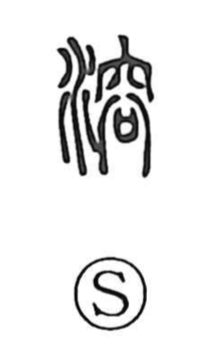

溶

Uncategorized
Kun: tokeru, tokasu, toku | On: yo
to melt ・ to dissolve
Explanation
A phono-semantic character: the water element provides the meaning, while 容 supplies the sound (yo) and a suggestive image. 容 originally shows the offering of a sai—a covenant vessel that held written prayers—in an ancestral mausoleum, with the gods’ presence dimly manifest and brimming there. The Shuowen glosses it as “vigorous water,” evoking abundant, flowing water. From the idea of things merging and becoming one within such water, the character takes on the sense “to melt, to dissolve,” as seen in compounds like yōkai (dissolution) and yōeki (solution). By contrast, 鎔 and 熔 refer specifically to melting metal with heat.